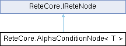

|
ReteRaven 1.3.1
A Rete-based rules engine and builder
|
|
ReteRaven 1.3.1
A Rete-based rules engine and builder
|
The AlphaConditionNode class represents a node in a Rete network that applies a simple condition (predicate) to incoming facts. More...

Public Member Functions | |
| AlphaConditionNode (string propertytName, Func< T, bool > predicate, IReteNode successor) | |
| This constructor initializes a new instance of the AlphaConditionNode class with the specified property name, predicate, and successor node. The property name is used for selective re-evaluation when facts change, while the predicate defines the condition that facts must satisfy to be propagated to the successor. The successor node is where facts that pass the condition will be sent for further processing in the Rete network. This constructor sets up the necessary components for the AlphaConditionNode to function as a filter within the Rete algorithm, allowing it to efficiently evaluate incoming facts and manage their flow through the network based on defined conditions. | |
| void | AddSuccessor (IReteNode node) |
| An AlphaConditionNode typically has one successor, which is often an AlphaMemory node that stores facts that pass the condition. The AddSuccessor method is provided for completeness, but in a typical Rete implementation, the successor is set at construction and does not change dynamically. If you want to support multiple successors, you would need to modify this class to maintain. | |
| void | Assert (object fact) |
| Assert a fact into the AlphaConditionNode. The node checks if the fact is of type T and if it satisfies the predicate. If both conditions are met, the fact is passed to the successor node. This method is called when a new fact is introduced into the Rete network or when an existing fact is updated and needs to be re-evaluated. | |
| void | Retract (object fact) |
| Retract a fact from the AlphaConditionNode. Similar to Assert, it checks if the fact is of type T and satisfies the predicate. If it does, it tells the successor node to retract this fact. This method is called when a fact is removed from the Rete network or when an existing fact is updated and no longer satisfies the condition, necessitating its removal from downstream nodes. | |
| void | Refresh (object fact, string changedProperty) |
| Refresh a fact in the AlphaConditionNode. This method is called when a property of a fact changes, and it allows the node to re-evaluate the condition for that fact. If the changed property matches TargetProperty (or if TargetProperty is null/empty), the node will first retract the old fact from the successor and then assert the updated fact, ensuring that downstream nodes have the correct state based on the new information. | |
| void | RemoveSuccessor (IReteNode successor) |
| Removes a successor node from this AlphaConditionNode. Since this implementation assumes a single successor set at construction, this method does not actually remove the successor but is provided for completeness. If you want to support dynamic changes to the successor, you would need to modify this class to allow for multiple successors and implement the logic to remove the specified child node from the collection of successors. In its current form, this method simply prints a message indicating that it is not implemented, as the design of this node does not accommodate multiple successors or dynamic changes to the successor. This is a placeholder for potential future enhancements to the class to support more complex network structures. | |
| void | DebugPrint (object fact, int level=0) |
| This method is used for debugging purposes to print the structure of the Rete network and the evaluation results of facts at this node. | |
Properties | |
| string | TargetProperty [get] |
| The name of the property that this AlphaConditionNode is interested in. This is used for selective re-evaluation when a fact changes. If the changed property matches TargetProperty, the node will re-evaluate the condition for that fact. If TargetProperty is null or empty, it will re-evaluate for any change, which is less efficient but necessary if the condition depends on multiple properties or the entire object state. | |
| IReteNode? | Parent [get, set] |
| The parent node in the Rete network. This property allows for navigation back up the network from this node. | |
| IEnumerable< IReteNode > | Successors [get] |
| Returns an enumerable of successor nodes. In this implementation, there is typically one successor node that receives facts that satisfy the condition defined by the predicate. | |
The AlphaConditionNode class represents a node in a Rete network that applies a simple condition (predicate) to incoming facts.
| T | The fact is of this type. |
| void ReteCore.AlphaConditionNode< T >.AddSuccessor | ( | IReteNode | node | ) |
An AlphaConditionNode typically has one successor, which is often an AlphaMemory node that stores facts that pass the condition. The AddSuccessor method is provided for completeness, but in a typical Rete implementation, the successor is set at construction and does not change dynamically. If you want to support multiple successors, you would need to modify this class to maintain.
| node | The node to add as a successor. Cannot be null. |
| ReteCore.AlphaConditionNode< T >.AlphaConditionNode | ( | string | propertytName, |
| Func< T, bool > | predicate, | ||
| IReteNode | successor ) |
This constructor initializes a new instance of the AlphaConditionNode class with the specified property name, predicate, and successor node. The property name is used for selective re-evaluation when facts change, while the predicate defines the condition that facts must satisfy to be propagated to the successor. The successor node is where facts that pass the condition will be sent for further processing in the Rete network. This constructor sets up the necessary components for the AlphaConditionNode to function as a filter within the Rete algorithm, allowing it to efficiently evaluate incoming facts and manage their flow through the network based on defined conditions.
| propertytName | The name of the fact |
| predicate | The filtering condition. All facts that satisfy this condition are propagated forward. |
| successor | The successor node to propagate the fact to. |
| void ReteCore.AlphaConditionNode< T >.Assert | ( | object | fact | ) |
Assert a fact into the AlphaConditionNode. The node checks if the fact is of type T and if it satisfies the predicate. If both conditions are met, the fact is passed to the successor node. This method is called when a new fact is introduced into the Rete network or when an existing fact is updated and needs to be re-evaluated.
| fact | The fact object to be asserted and passed to successor nodes. Cannot be null. |
Implements ReteCore.IReteNode.
| void ReteCore.AlphaConditionNode< T >.DebugPrint | ( | object | fact, |
| int | level = 0 ) |
This method is used for debugging purposes to print the structure of the Rete network and the evaluation results of facts at this node.
| fact | The fact object to include in the debug output. Can be any object; its string representation will be printed. |
| level | The indentation level to apply to the debug message. Each level increases indentation by spaces. Defaults to 0. |
Implements ReteCore.IReteNode.
| void ReteCore.AlphaConditionNode< T >.Refresh | ( | object | fact, |
| string | changedProperty ) |
Refresh a fact in the AlphaConditionNode. This method is called when a property of a fact changes, and it allows the node to re-evaluate the condition for that fact. If the changed property matches TargetProperty (or if TargetProperty is null/empty), the node will first retract the old fact from the successor and then assert the updated fact, ensuring that downstream nodes have the correct state based on the new information.
| fact | The fact object whose property is being refreshed. Cannot be null. |
| changedProperty | The name of the property to refresh. Cannot be null or empty. |
Implements ReteCore.IReteNode.
| void ReteCore.AlphaConditionNode< T >.RemoveSuccessor | ( | IReteNode | successor | ) |
Removes a successor node from this AlphaConditionNode. Since this implementation assumes a single successor set at construction, this method does not actually remove the successor but is provided for completeness. If you want to support dynamic changes to the successor, you would need to modify this class to allow for multiple successors and implement the logic to remove the specified child node from the collection of successors. In its current form, this method simply prints a message indicating that it is not implemented, as the design of this node does not accommodate multiple successors or dynamic changes to the successor. This is a placeholder for potential future enhancements to the class to support more complex network structures.
| successor | The successor node to remove. Cannot be null. |
Implements ReteCore.IReteNode.
| void ReteCore.AlphaConditionNode< T >.Retract | ( | object | fact | ) |
Retract a fact from the AlphaConditionNode. Similar to Assert, it checks if the fact is of type T and satisfies the predicate. If it does, it tells the successor node to retract this fact. This method is called when a fact is removed from the Rete network or when an existing fact is updated and no longer satisfies the condition, necessitating its removal from downstream nodes.
| fact | The fact object to retract. Cannot be null. |
Implements ReteCore.IReteNode.
|
getset |
The parent node in the Rete network. This property allows for navigation back up the network from this node.
Implements ReteCore.IReteNode.
|
get |
Returns an enumerable of successor nodes. In this implementation, there is typically one successor node that receives facts that satisfy the condition defined by the predicate.
Implements ReteCore.IReteNode.